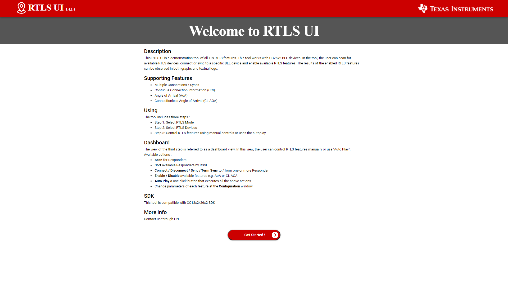
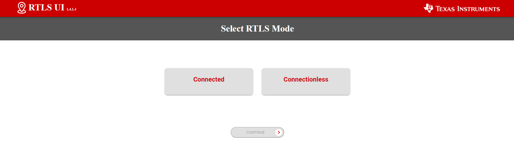
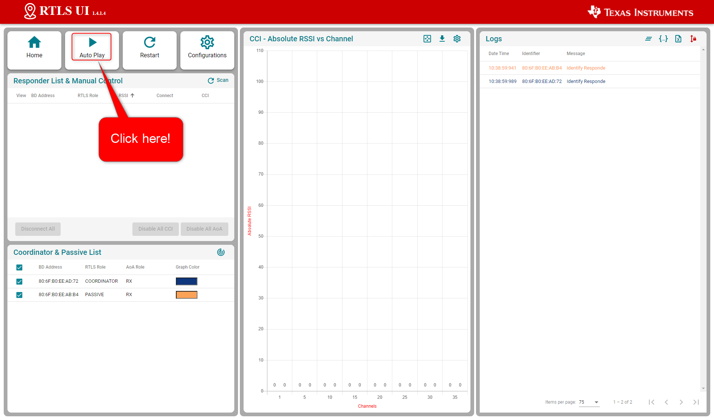
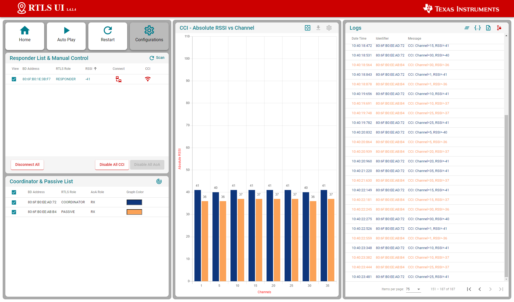
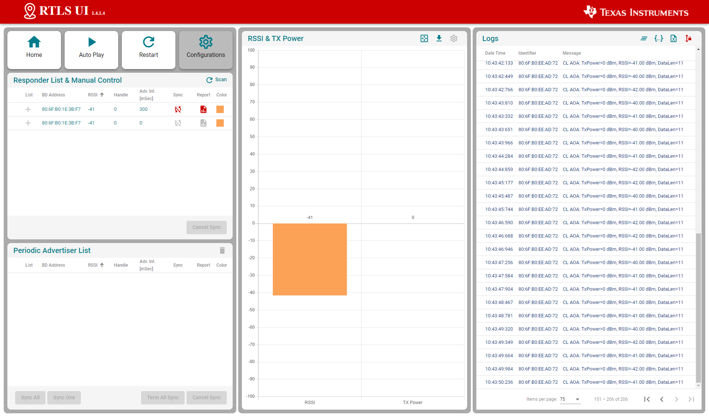

Note
For the past few years, we have been improving our Real Time Localization System (RTLS) toolbox. Today, our SimpleLink CC26x2 Bluetooth LE wireless MCUs and software stack (BLE5-Stack) solution elements enable development of Bluetooth 5.2 compliant direction-finding solutions based on Received Signal Strength Indication (RSSI) and Angle of Arrival (AoA), with each leveraged to assist customers building advanced direction-finding applications in various segments, such as automotive and industrial.
It should be understood that an actual end product implementation incorporating AoA direction finding locator capabilities (1) requires advanced knowledge and further integration by the customer that would not ordinarily be required in a product using Bluetooth LE for communication purposes. Some challenges the customer may be required to address with AoA in their locator product include, but are not limited to, the following:
- Embedded or system-level algorithms to achieve desired localization performance/angular accuracy while mitigating the presence of undesired signals (e.g. multi-path reception) in various operating environments
- Antenna design to match the end product’s industrial design constraints and/or performance expectations
With Bluetooth-qualified AoA capabilities now included in the SDK, we are making the following modifications in our support for AoA:
- The BOOSTXL-AOA antenna evaluation board will no longer be available for purchase after September 30, 2021.
- For SDK 5.20 and later, in conformity with Bluetooth Low Energy specifications, RTLS examples only support “raw I/Q data” mode. I/Q data can be used for the development of algorithms that will need to be specific to your end product implementation.
- For SDK 5.20 and later, support for Angle of Arrival (AoA) has been removed from the RTLS visual demo.
The content of SimpleLink CC13X2 / CC26X2 SDK version 5.10 and earlier releases will remain accessible; however, limited E2E support for AoA will be provided in these earlier SDKs.
(1) Implementation incorporating AoA direction finding target capabilities do not require such advanced knowledge and can directly leverage the rtls_responder example provided in the SDK as described in the Bluetooth Low Energy Angle of Arrival (AoA) for target devices
Introduction
This module is a study of the Real Time Localization System (RTLS) Toolbox provided within the SimpleLink CC13XX-CC26XX SDK. It is assumed that the reader has a basic knowledge of embedded C tool chains and general C and Python programming concepts.
This lab is based on the (RTLS Coordinator role), (RTLS Responder role)
and (RTLS Passive role) projects that are part of
the SimpleLink CC13XX-CC26XX SDK.rtls_coordinatorrtls_responderrtls_passive
First, the lab will cover an overview on how to get started with the RTLS projects. Subsequent tasks of this lab will guide the user on how to customize these projects.
Prerequisites
Hardware required
This module requires the following kits:
- 2x or 3x SimpleLink™ CC26x2R LaunchPad™
Recommended reading
These chapters in the TI BLE5-Stack User's Guide
- TI BLE5-Stack Quick Start
- The CC13XX or CC26XX SDK Platform
- Application
- BLE5-Stack (especially the sections dedicated to periodic advertising and periodic scanning)
- RTLS Toolbox
- Network Processor Interface (NPI)
Project readme files:
rtls_coordinatorReadme located in <SimpleLink CC13XX / CC26XX SDK> → examples → rtos → Board → ble5stack → rtls_coordinator folder within the CC13XX / CC26XX SDK.- All relevant information to and is contained in
the readme
rtls_responderrtls_passivertls_coordinator rtls_agentReadme located in <SimpleLink CC13XX / CC26XX SDK> → tools → ble5stack → rtls_agent folder within the CC13XX / CC26XX SDK. This will be covered in detail in Task 2.
Software for desktop development
- SimpleLink CC13XX-CC26XX SDK
- Those listed under the Dependencies section of the CC13XX-CC26XX SDK Release Notes
Task 1 – Prepare your environment
At the end of this task you will have:
- SimpleLink CC13XX-CC26XX SDK installed
- Working Python environment
Install the Software
- Run the SimpleLink CC13XX / CC26XX SDK installer.
- Install Python 3.7 from the Python Download page.
- Setup the Python environment as described in the README.md in <SimpleLink CC13XX / CC26XX SDK> → tools → ble5stack → rtls_agent folder.
- If a bash environment doesn't exist on your system, install Git bash
This gives you:
- The SDK with TI-RTOS included at which
defaults to .
<SIMPLELINK_CC13XX_CC26XX_SDK_INSTALL_DIR>C:\ti\simplelink_cc13xx_cc26xx_sdk_x_xx_xx_xx - Python 3.7 environment with all dependencies required by the RTLS Node Manager
Load the software
- Load Board #1 with project:
<SimpleLink CC13XX / CC26XX SDK> → examples → rtos → CC26X2R1_LAUNCHXL → ble5stack → rtls_passivertls_passive - Load Board #2 with project:
<SimpleLink CC13XX / CC26XX SDK> → examples → rtos → CC26X2R1_LAUNCHXL → ble5stack → rtls_responderrtls_responder - Load Board #3 with project:
<SimpleLink CC13XX / CC26XX SDK> → examples → rtos → CC26X2R1_LAUNCHXL → ble5stack → rtls_coordinatorrtls_coordinator
Task 2 – Discover the RTLS Toolbox
At the end of this task you will have:
- A basic knowledge of the localization techniques
- Used script that sets up an RTLS network.
rtls_example.py - Used the RTLS toolbox and the RTLS UI
Localization Techniques
A Real Time Localization System can be defined as a system capable of determining the position of a target within a defined physical area in real time. The physical area is normally defined through deployment of reference/locator nodes.
There are two fundamentally different approaches to location finding:
Trilateration, where you know the distance between a reference node and a target node. RSSI based techniques are typical examples of trilateration.

Triangulation, where you know the direction from a reference node to a target
node. is a technique that can be used to measure the angle
from the receiver to the transmitter.Angle of Arrival

What is a node?
A node in this case is referred to as a localization capable embedded device. For the demos in the SDK, nodes are LaunchPads
Quiz!
Select the localization techniques based on trilateration...
Select the localization techniques based on triangulation...
RTLS Toolbox Introduction
In the previous section, we discussed how multiple nodes can combine angle information to perform triangulation and/or distance to perform trilateration. It is important to remember in the pictures above, it is not possible for one single node to localize an object using the TI sample applications. A single node only produces one angle and/or one distance. By nature, this is an ambiguous measurement. If there are at least two nodes providing AoA data, then localization can occur. Same for RSSI, if there are at least three nodes providing RSSI values, then localization can occur by combining the samples from the individual nodes and finding the intersection.
In addition, the previous section has not discussed the nature of the "link" between the locator(s) and the target(s). In this lab, two options - both Bluetooth 5.1 compliant - are presented. These are known as "connection" and "connectionless". The connection-RTLS requires a Bluetooth LE connection between the locator and the target and optionally some passive nodes. While connectionless-RTLS allows the locator and the target to remain in scanning/advertising state. The main advantages of connection based RTLS systems are the Bluetooth Low Energy connection ensures the identity of the target device and bidirectional communication is available. On the other side, connectionless RTLS system has a reduced complexity (as there is no need for passive devices) and a large number of targets (several dozens) can be tracked simultaneously.
An overview of the topology is shown below. In the diagram below, the black, blue, and red boxes represent CC26x2R LaunchPads while the grey box is a PC. The locators are the RTLS coordinator and (for connection RTLS only) the RTLS passive. The target is the RTLS responder.
For a comprehensive presentation of the RTLS toolbox and its software components, please see the TI BLE5-Stack User's Guide
RTLS Roles and Topology
Each node in an RTLS network utilizes the software components listed above
in a different role to perform a specific task related to localization. There are
three examples: , , and . The capabilities
of these examples are explained below.rtls_coordinatorrtls_responderrtls_passive
Connection mode
RTLS Coordinator
The RTLS Coordinator runs a full BLE-Stack and acts as a Bluetooth LE Central device. It will scan and connect to the RTLS Responder over Bluetooth LE. Once a connection is established the RTLS Coordinator will do the following:
- Share the connection parameters (access address, peripheral sleep clock accuracy, and CRC init) with the PC.
- Use the BLE link to share RTLS parameters with the Responder device.
- Measure the RSSI of the Bluetooth signals it receives
- (Possibly) Receives packets with CTE and performs in-phase and quadrature component (IQ) sampling
- The RTLS Coordinator does not send out AoA packets, but configures the Responder to do so.
- Report RSSI and IQ data to the PC.
RTLS Responder
The RTLS Responder runs a full BLE-Stack and acts as a Bluetooth LE Peripheral device. This is the device that is to be located (often called"target"). The Responder device will advertise and enter a connection with the RTLS Coordinator.
- Advertises special string to be detected by (covered in detail in Task 3
rtls_coordinator) - Sends data packets with AoA tone embedded using Constant Tone Extension (CTE). More information on CTE can be found in the Bluetooth Core Specification Version 5.2
- Wireless/battery operated, not connected to PC
RTLS Passive
The RTLS Passive does not actively participate in the BLE connection between the RTLS Coordinator and Responder. Instead, it uses the Micro BLE-Stack in connection monitoring mode to follow the connection. To do this, the Passive device relies on the Coordinator to distribute the connection parameters once a connection is formed. The Passive node does the following:
- Measures the RSSI of the Bluetooth signals sent by the RTLS Responder and RTLS Coordinator
- Receives packets with CTE and performs in-phase and quadrature component (IQ) sampling
- Uses Micro BLE-Stack in Connection Monitoring mode to follow connection between Coordinator and Responder
Note: The RTLS Passive can be used but is not necessary.
PC/Central Processing Node
The PC node is responsible for controlling the embedded RTLS nodes by sending commands and processing events. In the SDK, this is realized by a combination of a Python layer that implements the UNPI Central role and a server that translates UNPI commands to a socket interface that is used by the User Interface (UI) application running in the browser. In a final product, these algorithms may be implemented on an embedded device or even perhaps the RTLS Coordinator node.
The PC implements the following functionality in the RTLS GUI:
- Communicate with RTLS_Util to issue commands and extract received RTLS Data from devices
- Graphing and logging data
- Enumerate devices
- Distribute connection parameters to Passive nodes
Quiz!
Is it possible to have multiple RTLS Passive devices in a connection mode network?
Why would multiple Passive devices be desirable in a connection-AoA network? (select all that apply)
Connection-less mode
RTLS Coordinator
The RTLS Coordinator runs a full BLE-Stack and acts as a Bluetooth LE observer device. It will scan and synchronize to the RTLS Responder periodic advertisements. Once synchronized, the RTLS Coordinator will measure RSSI and receive packets with CTE to performs in-phase and quadrature component (IQ) sampling
RTLS Responder (CTE Transmitter)
The RTLS Responder runs a full BLE-Stack and acts as a Bluetooth LE broadcaster device. This is the device that is to be located (also called "target"). The Responder device will advertise periodic advertisements with a Constant Tone Extension (CTE) appended. More information on CTE can be found in the Bluetooth Core Specification Version 5.2
PC/Central Processing Node
The PC node is responsible for controlling the embedded RTLS nodes by sending commands and processing events. In the SDK, this is realized by a combination of a Python layer that implements the UNPI Central role and a server that translates UNPI commands to a socket interface that is used by the User Interface (UI) application running in the browser. In a final product, these algorithms may be implemented on an embedded device or even perhaps the RTLS Coordinator node.
The PC implements the following functionality in the RTLS GUI:
- Communicate via REST API's with RTLS_Util to issue commands and extract received RTLS Data from devices
- Graphing and logging data
- Enumerate devices
Quiz!
How many RTLS Passive devices should be used in a connectionless-AoA network?
Running the RTLS Visual Demo
In this sub-part, we are going to use the UI (User Interface). This tool runs on a computer. You will find RTLS_UI in <SimpleLink CC13XX / CC26XX SDK> → tools → ble5stack → rtls_agent → rtls_ui folder.
Build the projects and flash the LaunchPads as described before.
Connect the Coordinator and Passive devices to the computer through USB. The Responder device must be powered but does not require to be connected to the computer.
Execute the program
rtls_ui.exeThis will open your default web-browser and connect you to a local server. If your default browser is not supported (typically if your default web browser is IE), you will have to copy-paste the address of the server in a supported web browser.
Review RTLS UI's welcome page, then click on "Get Started!"
Select the mode to enable (Connection or Connectionless). Only one feature should be selected. Once done, click on "Continue"
The UI will then display the devices detected. The UI only detects the RTLS receivers (i.e. the Coordinator and Passive devices for connection mode, and the Coordinator device for connectionless mode). The UI will NOT display the Responder device(s) eventually connected to the computer.
Select the launchpad(s) to use. Only the Coordinator and/or Passive devices have to be selected. In the case of connectionless, only one Coordinator should be selected. Once done, click on "Continue"

The system is ready! Click on "Auto Play" to start the demo:
For connection mode, this will automatically:
- launch a scan to detect the Responder device
- connect the Responder device
- enable continuous connection information monitoring (i.e. RSSI sampling)
For connectionless mode, this will automatically:- launch a scan to find the periodic advertisements sent by the RTLS Responder
- synchronize with the periodic advertisements
- enable RSSI and TX Power monitoring
Here is the screen obtained for connection-AoA:
Here is the screen obtained for connectionless-AoA:The logs are stored by the RTLS UI in the folder . These logs keep track of the UART messages sent by the RTLS UI and the nodes.
rtls_ui\logs
Angle and IQ data display
The out of the box RTLS Visual Demo does not enable IQ data sampling. The RTLS Non-Visual Demo presented below allows IQ data sampling and storage in a csv file.
Running the RTLS Non-Visual Demo
In this sub-part we are going to use a Python script to directly interact with the nodes.
This gives power to the developer to define
custom behavior of the RTLS network and control the devices directly.
Specifically, this will cover setting up the required Python dependencies and
running the python scripts provided in the SDK.
For connection mode, we recommend to first use the script .
For connectionless mode, use the script .rtls_connected.pyrtls_connectionless.py
Assumptions and Notation
Before starting this task, the following is assumed
- A command prompt supporting bash or Git bash is open and running.
- Unix style slashes will be used throughout. If it is necessary to run these
steps in the Windows Command Prompt (), then should be replaced
with .
cmd.exe/\ - Various command prompts will search your [System Path variable][1] to find Python. If you have a pre-existing Python version in your path this may be selected over the newly installed version. To prevent mixing the two up, we will use virtual environments.
- We assume that Mac users don't have another instance of Python 3 installed.
If this is not the case, then based on the variable an older version
of Python may be selected with invoking the command. Be sure to
invoke the correct version of Python.
PATHpython3 - Here we re-hash some of the instructions from the rtls_agent/readme.html. Some steps may be redundant if you already followed this and have the python environment setup.
- Please have a look to the README file stored in tools\ble5stack\rtls_agent\rtls_util
- Install Python per steps in Getting started
- Open a command prompt (Git Bash is recommended)
Create a Python virtual environment
- Navigate to the SDK folder (e.g.
C:\ti\simplelink_cc13xx_cc26xx_sdk_x_xx_xx_xx\tools\ble5stack\rtls_agent) - Execute (windows) or (mac).
This will create a folder called
in the current directory that includes a copy of the python interpreter and a
sandbox for installing packages.
py -3.7 -m venv .venvpython3 -m venv .venv.venv - Note: When using Python through Anaconda, the following extra command should
be executed:
c:\Anaconda3\Scripts\activate base - Activate virtual environment using (bash) or
(Windows cmd)
source .venv/Scripts/activate.venv\Scripts\activate.bat - Observe that when a venv is activated will appear before each cmd
prompt
(.venv) - Notice that once the virtual environment is activated, the command
will use the local Python interpreter in the venv.
See Virtual Environments for more info.
python
- Navigate to the SDK folder (e.g.
Install RTLS packages and required external Python dependencies
Make sure to review the content of the README file.
This step will use package.bat (for Windows) or package.sh (for Linux / Mac) to install the RTLS packages.
In Windows, run (winpty must be omitted if you are using PowerShell or CMD terminal). In Linux / Mac run
winpty ./package.bat -c -b -u -ipackage.sh -c -b -u -iExecute
python -m pip --proxy www.proxy.com install -r requirements.txt- Note that above is only required if behind a proxy.
--proxy www.proxy.com www.proxy.comis an example of a proxy. It should be replaced with the web address of your specific proxy if applicable.- This will install the required external Python packages that are needed by the RTLS
Python suite (these are listed in ).
requirements.txt
Open the python script ( or , find and update the following lines.
examples/rtls_connected.pyexamples/rtls_connectionless.pycoordinator_comport="COM27", # "/dev/cu.usbmodemL1100KKT1", passive_comports=[], # ['COM19']Make sure to list all the Coordinator and Passive LaunchPads used and to update properly the COM ports used. It is not required to add the Responder device to this list.
Notes
For connectionless-AoA, only one RTLS coordinator should be used.
Make sure all the functionalities you need are enabled
Verify both RSSI and IQ data collection is enabled.
For connection mode:
continues_connection_info=True, angle_of_arrival=True,For connectionless mode:
periodic_advertise_report=True, angle_of_arrival=True,
Save the file and run.
For connection mode, run the command
python -u examples/rtls_connected.py- The script will scan for RTLS devices, connect, and then print continuous connection information (RSSI, channel) for 15 seconds.
- See below for sample output snippet (note that the addresses and COM ports will be different).
- The out-of-box demo only reports continuous connection information (CCI). The following sections will help you to leverage all the capabilities of the provided scripts.
---------------------------------------------------------------------- Coordinator comport : COM27 Passive comports : [] Responder BD Address : [] Scan time : 10 Sec Connection Interval : 100 mSec Enable Continues Connection Interval : No Enable Angle Of Arrival (AoA) : Yes AoA Enable Filter : Yes AoA Slot Duration : 2 AoA Sample Rate : 1 AoA Sample Size : 1 AoA CTE Length : 20 AoA CTE Interval : 2 Data Collection Duration : 30 Data Collection iteration : 1 Provide Post Analyze Function : Yes Example Log Dir : C:\ti\simplelink_cc13xx_cc26xx_sdk_x_xx_xx_xx\tools\ble5stack\rtls_agent\examples\rtls_connected_log Example Log File Name : 10_27_2022_10_02_37_rtls_connected.log ---------------------------------------------------------------------- Devices Reset Start scan for 10 sec Scan Results: {'addr': '80:6F:B0:1E:35:E1', 'addrType': 0, 'rssi': -36, 'advSID': 255, 'periodicAdvInt': 0} Trying connect to 80:6F:B0:1E:35:E1 Connected to 80:6F:B0:1E:35:E1 with connection handle 0 ========== Starting Loop 1 ========== AOA Params Set AOA Started Example will now wait for result for 30 sec [10:27:2022 10:02:53:866904] : Added new set of IQ into C:\ti\simplelink_cc13xx_cc26xx_sdk_x_xx_xx_xx\tools\ble5stack\rtls_a gent\examples\rtls_connected_log\rtls_raw_iq_samples_806fb01e55f7_0_loop1.csv [10:27:2022 10:02:54:179892] : Added new set of IQ into C:\ti\simplelink_cc13xx_cc26xx_sdk_x_xx_xx_xx\tools\ble5stack\rtls_a gent\examples\rtls_connected_log\rtls_raw_iq_samples_806fb01e55f7_0_loop1.csv [10:27:2022 10:02:54:421870] : Added new set of IQ into C:\ti\simplelink_cc13xx_cc26xx_sdk_x_xx_xx_xx\tools\ble5stack\rtls_a gent\examples\rtls_connected_log\rtls_raw_iq_samples_806fb01e55f7_0_loop1.csv ... [10:27:2022 10:03:22:699925] : Added new set of IQ into C:\ti\simplelink_cc13xx_cc26xx_sdk_x_xx_xx_xx\tools\ble5stack\rtls_a gent\examples\rtls_connected_log\rtls_raw_iq_samples_806fb01e55f7_0_loop1.csv [10:27:2022 10:03:23:322936] : Added new set of IQ into C:\ti\simplelink_cc13xx_cc26xx_sdk_x_xx_xx_xx\tools\ble5stack\rtls_a gent\examples\rtls_connected_log\rtls_raw_iq_samples_806fb01e55f7_0_loop1.csv [10:27:2022 10:03:23:591923] : Added new set of IQ into C:\ti\simplelink_cc13xx_cc26xx_sdk_x_xx_xx_xx\tools\ble5stack\rtls_a gent\examples\rtls_connected_log\rtls_raw_iq_samples_806fb01e55f7_0_loop1.csv Rename "rtls_raw_iq_samples_806fb01e55f7_0_loop1.csv" into "10_27_2022_10_03_23_rtls_raw_iq_samples_806fb01e55f7_0_loop1.csv" Executing post analyze script on C:\ti\simplelink_cc13xx_cc26xx_sdk_x_xx_xx_xx\tools\ble5stack\rtls_agent\examples\rtls_conn ected_log\10_27_2022_10_03_23_rtls_raw_iq_samples_806fb01e55f7_0_loop1.csv Analyzing file : C:\ti\simplelink_cc13xx_cc26xx_sdk_x_xx_xx_xx\tools\ble5stack\rtls_agent\examples\rtls_connected_log\08_03_ 2021_10_03_23_rtls_raw_iq_samples_806fb01e55f7_0_loop1.csv Return here output of your post-analyze algorithm AOA Stopped Coordinator disconnected from responder with conn handle 0Log obtained for connection mode
The python script also creates the folder (in the folder). The logs stored in this folder keep track of the UART messages exchange by the python script with the nodes.
rtls_connected_logexamplesFor connectionless-AoA, run the command
python -u examples/rtls_connectionless.py- The script will scan for the periodic advertisements of an RTLS device and synchronize with them.
- After this it enables connectionless-CTE reception and prints RTLS information for 15 seconds.
- See below for sample output snippet (note that the addresses and COM ports will be different).
Example Input Parameters ---------------------------------------------------------------------- Coordinator comport : COM27 Responder BD Address : [] Scan time : 10 Sec Sync Params : Sync Skip : 0 Use Advertiser List : Yes Start Periodic Advertise Report on Sync : No Enable Periodic Advertise Report : No Enable Angle Of Arrival (AoA) : Yes AoA Enable Filter : Yes AoA Slot Duration : 2 AoA Sample Rate : 1 AoA Sample Size : 1 Data Collection Duration : 30 Data Collection iteration : 1 Provide Post Analyze Function : Yes Example Log Dir : C:\ti\simplelink_cc13xx_cc26xx_sdk_x_xx_xx_xx\tools\ble5stack\rtls_agent\examples\rtls_connectionless_log Example Log File Name : 10_27_2022_09_56_52_rtls_connectionless.log ---------------------------------------------------------------------- Devices Reset Start scan for 10 sec Scan results: {'addr': '80:6F:B0:1E:35:E1', 'addrType': 0, 'rssi': -34, 'advSID': 1, 'periodicAdvInt': 240} Example will try sync with: {'addr': '80:6F:B0:1E:35:E1', 'addrType': 0, 'rssi': -34, 'advSID': 1, 'periodicAdvInt': 240} Using advertisers list to create sync Responder 80:6F:B0:1E:35:E1 has been added to advertisers list Starting attempt #1 to make sure that all required responder successfully connected All required responders successfully connected ! ========== Starting Loop 1 ========== Connectionless AOA started for 80:6F:B0:1E:35:E1 Example will now wait for result for 30 sec [10:27:2022 09:57:16:721232] : Added new set of IQ into C:\ti\simplelink_cc13xx_cc26xx_sdk_x_xx_xx_xx\tools\ble5stack\rtls_agent\examples\rtls_connectionless_log\rtls_raw_iq_samples_806fb01e55f7_0_loop1.csv [10:27:2022 09:57:17:029199] : Added new set of IQ into C:\ti\simplelink_cc13xx_cc26xx_sdk_x_xx_xx_xx\tools\ble5stack\rtls_agent\examples\rtls_connectionless_log\rtls_raw_iq_samples_806fb01e55f7_0_loop1.csv [10:27:2022 09:57:17:289245] : Added new set of IQ into C:\ti\simplelink_cc13xx_cc26xx_sdk_x_xx_xx_xx\tools\ble5stack\rtls_agent\examples\rtls_connectionless_log\rtls_raw_iq_samples_806fb01e55f7_0_loop1.csv [10:27:2022 09:57:17:524198] : Added new set of IQ into C:\ti\simplelink_cc13xx_cc26xx_sdk_x_xx_xx_xx\tools\ble5stack\rtls_agent\examples\rtls_connectionless_log\rtls_raw_iq_samples_806fb01e55f7_0_loop1.csv [10:27:2022 09:57:17:825218] : Added new set of IQ into C:\ti\simplelink_cc13xx_cc26xx_sdk_x_xx_xx_xx\tools\ble5stack\rtls_agent\examples\rtls_connectionless_log\rtls_raw_iq_samples_806fb01e55f7_0_loop1.csv [10:27:2022 09:57:18:080235] : Added new set of IQ into C:\ti\simplelink_cc13xx_cc26xx_sdk_x_xx_xx_xx\tools\ble5stack\rtls_agent\examples\rtls_connectionless_log\rtls_raw_iq_samples_806fb01e55f7_0_loop1.csv [10:27:2022 09:57:18:468200] : Added new set of IQ into C:\ti\simplelink_cc13xx_cc26xx_sdk_x_xx_xx_xx\tools\ble5stack\rtls_agent\examples\rtls_connectionless_log\rtls_raw_iq_samples_806fb01e55f7_0_loop1.csv [10:27:2022 09:57:18:773198] : Added new set of IQ into C:\ti\simplelink_cc13xx_cc26xx_sdk_x_xx_xx_xx\tools\ble5stack\rtls_agent\examples\rtls_connectionless_log\rtls_raw_iq_samples_806fb01e55f7_0_loop1.csv [10:27:2022 09:57:19:125200] : Added new set of IQ into C:\ti\simplelink_cc13xx_cc26xx_sdk_x_xx_xx_xx\tools\ble5stack\rtls_agent\examples\rtls_connectionless_log\rtls_raw_iq_samples_806fb01e55f7_0_loop1.csv ... [10:27:2022 09:57:44:552275] : Added new set of IQ into C:\ti\simplelink_cc13xx_cc26xx_sdk_x_xx_xx_xx\tools\ble5stack\rtls_agent\examples\rtls_connectionless_log\rtls_raw_iq_samples_806fb01e55f7_0_loop1.csv [10:27:2022 09:57:44:839260] : Added new set of IQ into C:\ti\simplelink_cc13xx_cc26xx_sdk_x_xx_xx_xx\tools\ble5stack\rtls_agent\examples\rtls_connectionless_log\rtls_raw_iq_samples_806fb01e55f7_0_loop1.csv [10:27:2022 09:57:45:083247] : Added new set of IQ into C:\ti\simplelink_cc13xx_cc26xx_sdk_x_xx_xx_xx\tools\ble5stack\rtls_agent\examples\rtls_connectionless_log\rtls_raw_iq_samples_806fb01e55f7_0_loop1.csv [10:27:2022 09:57:45:636250] : Added new set of IQ into C:\ti\simplelink_cc13xx_cc26xx_sdk_x_xx_xx_xx\tools\ble5stack\rtls_agent\examples\rtls_connectionless_log\rtls_raw_iq_samples_806fb01e55f7_0_loop1.csv [10:27:2022 09:57:45:890282] : Added new set of IQ into C:\ti\simplelink_cc13xx_cc26xx_sdk_x_xx_xx_xx\tools\ble5stack\rtls_agent\examples\rtls_connectionless_log\rtls_raw_iq_samples_806fb01e55f7_0_loop1.csv [10:27:2022 09:57:46:229251] : Added new set of IQ into C:\ti\simplelink_cc13xx_cc26xx_sdk_x_xx_xx_xx\tools\ble5stack\rtls_agent\examples\rtls_connectionless_log\rtls_raw_iq_samples_806fb01e55f7_0_loop1.csv Rename rtls_raw_iq_samples_806fb01e55f7_0_loop1.csv into 10_27_2022_09_57_46_rtls_raw_iq_samples_806fb01e55f7_0_loop1.csv Executing post analyze script on C:\ti\simplelink_cc13xx_cc26xx_sdk_x_xx_xx_xx\tools\ble5stack\rtls_agent\examples\rtls_connectionless_log\10_27_2022_09_57_46_rtls_raw_iq_samples_806fb01e55f7_0_loop1.csv Analyzing file : C:\ti\simplelink_cc13xx_cc26xx_sdk_x_xx_xx_xx\tools\ble5stack\rtls_agent\examples\rtls_connectionless_log\08_03_2021_09_57_46_rtls_raw_iq_samples_806fb01e55f7_0_loop1.csv Return here output of your post-analyze algorithm Connectionless AOA stoped for 80:6F:B0:1E:35:E1 Coordinator terminated sync from responder with sync handle 0Log obtained for connectionless mode
The python script also creates the folder (in the folder). The logs stored in this folder keep track of the UART messages exchange by the python script with the nodes. This folder also contains the raw IQ samples received from the .
rtls_connectionless_logexamplesrtls_coordinator
Why is it recommended to create a virtual Python environment (select all that apply)?
Task 3 – Deep dive in the RTLS Python scripts
With the environment setup, it is time for us to use Python directly to control the RTLS nodes. The goal of this task is to explain the RTLS PC software and to walk through setting up a RTLS network.
You might want to revision or make a copy of the default rtls_connected.py so it is
preserved. Save it with another name like as a backup.rtls_example_old.py
RTLS Node Manager Python Overview
First, we will briefly discuss the important layers of the Python solution and their role.
/rtls_agent
/examples/
rtls_connected.py - Example to exercise rtls_util functionality
rtls_aoa_iq_with_rtls_util_export_into_csv.py - Example to store the IQ data (or AOA) to a file on your computer
rtls_aoa_multi_conn_example.py - Example to exercice the multi-connections capability of the RTLS devices
/rtls_util/
Main interface for examples. Class that abstracts RTLSManager and RTLSNode
functionality. Handles waiting for RTLS responses in order to provide synchronous
API's. Raises any unexpected functionality as an exception.
Please review the README file for details.
/rtls/
/rtls/
rtlsmanager.py - Class to manage multiple nodes in an RTLS network.
Subscribes to incoming data from the nodes, routes
outgoing data to each of the nodes. Distributes
connection parameters from Coordinator node to any
connected Passive nodes when an connection is
established. Handles messages from rtls_agent_cli server
if one is provided.
rtlsnode.py - Class that implements the basic functionality of a node
in an RTLS network. This class will query the embedded
device connected to it and determine its capabilities.
Essentially this assigns a role in an RTLS context to
a COM port.
ss_rtls.py Defines the commands in the RTLS UNPI subsystem.
This file will define builder classes for the various
UNPI commands that the RTLS subsystem supports.
/unpi/
serialnode.py - Thread that manages serial communication from COM ports.
to higher layers.
Queues up messages and sends them to parser.
unpiparser.py - Parser for Unified Network Processor Interface messages.
Implements UNPI frame format packing/unpacking.
It is recommended to build RTLS based Python applications on top of the
class within rtls_util.py. This class forms the RTLS API set. A call
to an method translates to a sequence of one or more RTLS UNPI commands
/ responses from ss_rtls.py. In this way, is an abstraction of both the
RTLS UNPI communication as well as the which manages the various
's.RtlsUtilRtlsUtilRtlsUtilRTLSManagerRTLSNode
RTLS Python Program Template
rtls_connected.py and
from the previous task show how to perform basic initialization of as well
as how to set up the networking and collecting localization data.rtls_connectionless.pyRtlsUtil
The beginning of has several configuration variables:main()
Here are for connection AoA:
example = RtlsConnectedExample(
coordinator_comport="COM27", # "/dev/cu.usbmodemL1100KKT1",
passive_comports=[], # ['COM19']
responder_bd_addrs=[], # ['80:6F:B0:1E:39:02', '80:6F:B0:1E:38:C3']
scan_time=10,
connection_interval=100,
angle_of_arrival=True,
angle_of_arrival_params={
'enable_filter': True,
'slot_duration': 2,
'sample_rate': 1,
'sample_size': 1,
'cte_length': 20,
'cte_interval': 2
},
data_collection_duration=30,
data_collection_iteration=1,
post_analyze_func=post_analyze_of_IQ_data
)
Here are for connectionless AoA:
example = RtlsConnectionlessExample(
coordinator_comport="COM27",
responder_bd_addrs=[], # ['80:6F:B0:1E:39:02', '80:6F:B0:1E:38:C3']
scan_time=10,
sync_params={
'sync_skip': 0
},
use_advertiser_list=True,
start_periodic_advertise_report_on_sync=False,
periodic_advertise_report=False,
angle_of_arrival=True,
angle_of_arrival_params={
'enable_filter': True,
'slot_duration': 2,
'sample_rate': 1,
'sample_size': 1,
},
data_collection_duration=30,
data_collection_iteration=1,
post_analyze_func=post_analyze_of_IQ_data
)
These allow the user to select:
- the COM port used to communicate with the
rtls_coordinator - the COM port used to communicate with the (not
used for connectionless AoA as this mode does not define the passive
role)
rtls_passive - the addresses of the devices to connect/synchronize with. If left blank, all the devices found will be connected/synchronized.
- the duration of the scanning phases (for connection/synchronization of the devices)
- the connection interval (connection AoA only / not used for connectionless AoA as no connection is formed)
- if IQ data collection for AoA is enabled (cf. boolean
angle_of_arrival) - the parameters used for AoA data collection
- enable_filter, if set to true only the samples collected during sampling slots are reported. Otherwise, all the samples (including the ones sampled during switching slots are reported)
- slot_duration, length of the sampling slots (1 or 2 us)
- sample_rate, sampling rate (1, 2, 3 or 4 MHz)
- sample_size, 1 or 2 bytes
- cte_length, length in 16us units of the CTEs requested by the central locator (connection AOA only)
- cte_interval, interval (in number of connection events) between two CTE requests (connection AOA only)
- the duration of the IQ data collection before analysis
- the number of data collections iterations to run
- the function to trigger once the data collection is done
RtlsUtils initialization
Parts of the initialization function are common to all modes. First, construct an instance of the RTLSUtil class to serve as the RTLS Node Manager interface. The first parameter is the file to log debug information to and the second parameter is the logging level.
rtlsUtil = RtlsUtil(logging_file, RtlsUtilLoggingLevel.INFO)
Alternatively, a more verbose logging level ("DEBUG") can be selected.
Next, create a dictionary of devices and pass this to which
will create 's for each device and an class using these
nodes.RTLS.set_devices()RTLSNodeRTLSManager
devices = [
{"com_port": coordinator_comport, "baud_rate": 460800, "name": "Coordinator"},
{"com_port": passive_comport, "baud_rate": 460800, "name": f"Passive {index}"},
]
Note
The "name" field above does not affect the functionality. It is simply used for logging purposes and therefore it is not required to modify this if not desired.
RTLS.set_devices() will send RTLS_CMD_IDENTIFY to each node to identify it's capabilities
and set the relevant Coordinator / Passive(s).
Next, reset both nodes:
rtlsUtil.reset_devices()
The procedures above will appear, from a UNPI perspective, as the following:
RTLS Network Setup Procedure
At this point you should have a basic understanding of RTLS classes. Next we will cover the minimum commands required to setup an RTLS network. This procedure is slightly different for connection-AoA and connection-less AoA.
RTLS Network Setup Procedure for connection-AoA
For connection-AoA a BLE connection is a prerequisite for performing localization.
The sequence diagram below shows the UNPI commands required to establish a connection between and .rtls_coordinatorrtls_responder
As covered in the BLE connections lab, before connecting, a scan must be
performed to see if the desired device is nearby. This is initiated by .
The scanning device will inspect the advertisement and optionally the scan response
data to determine if it wishes to connect to a given advertiser. Usually the
scanner is looking for a given token or string in the broadcast data of the advertiser.
The RTLS Coordinator will look for the string starting
at the 3rd byte of the Responder's advertisement data. If the advertising device
matches the filter, then it will be reported to the PC/Node Manager as
responses which are returned from RtlsUtil.scan() as a list of
devices. If the advertising device does not match the filter, it will be discarded.RtlsUtil.scan(){'R','T','L','S','R','e','s','p','o','n','d','e','r',}RTLS_CMD_SCAN
RtlsUtil.ble_connect() can be used to form a connection to one of the devices in the
scan results. This will inform to form a connection by issuing an
along with the peer device's address and address type.
The address information can be extracted from the responses
coming from the Coordinator node.rtls_coordinatorRTLS_CMD_CONNECTRTLS_CMD_SCAN
If the connection is successful, the response will be
received with status of and will return.
The RTLS examples do not consider a connection to be established between Coordinator
and Responder until the devices have paired and formed an L2CAP Connection Oriented
Channel (CoC). The L2CAP CoC is used to send RTLS sync related information
between Coordinator and Responder. This can include AoA parameters
or a command to enable AoA.RTLS_CMD_CONNECTRTLS_SUCCESSRtlsUtil.ble_connect()
Immediately after the BLE connection is established
(i.e. received from the stack), the
will share the connection parameters with the PC/Node Manager via
. This information is needed by the connection monitor
inside in order to follow the connection between RTLS Coordinator
and Responder.GAP_LINK_ESTABLISHED_EVENTrtls_coordinatorRTLS_CMD_CONN_PARAMSrtls_passive
Distributing Connection Parameters
The Python class will immediately relay any connection
parameters received () to all of the Passive nodes
connected. This does not need to be done manually.RTLSManagerRTLS_CMD_CONN_PARAMS
RTLS Passive Connection Lost
As its name suggests, the Passive device does not have an active role in the BLE connection. The Passive has only the capability to listen the link but is not able to require a retransmission if a packet is not properly received. As a result, and especially in noisy environments, the Passive can lose track of the connection. In that case, the Passive device needs to re-receive the (up to date) connection info to be able to listen the BLE link. This mechanism is not implemented in the out-of-the-box examples and you will be required to restart the demo if it happens.
RTLS Network Setup Procedure for connectionless mode
For connectionless, the rtls_coordinator has to synchronize with the
periodic advertisements of the rtls_responder.
The sequence diagram below shows the UNPI commands required to synchronize the and .rtls_coordinatorrtls_responder
The way rtls_coordinator synchronizes with a periodic advertiser (rtls_responder) is detailed in the Generic Access Profile (GAP) section of the TI BLE5-Stack User's Guide. A scan must first be performed in order to identify the devices sending periodic advertisements nearby. After this, the advertiser(s) to synchronize with is(are) selected. The periodic advertisers found can be filtered based on the type of CTE sent. Once synchronized with the periodic advertiser, the receiver can start sampling the CTE appended to the periodic advertisement packets and extract AoA information.
Setting up RTLS Network
Now that we understand the basics behind the RTLS networks and how to set them up,
let's review how the and
sample apps set up the RTLS networks.rtls_connected.pyrtls_connectionless.py
Note that the scripts will do some additional processing after the network is setup. This is will be covered later in this lab.
Setting up RTLS Network in Python for connection-AoA
The commands required to setup a network belong to the RTLS UNPI subsystem and
can be found in the file. The sending and receiving of these commands
is abstracted through the class.ss_rtls.pyRtlsUtil
Scanning for Devices
We will use the as a starting point. From the sections
above, we know that after the nodes are identified, we want to tell the Coordinator
to scan. This is initiated as such:rtls_connected.py
scan_results = rtlsUtil.scan(scan_time_sec)
Alternatively, it is possible to only scan for a specific device address by passing a second "address" parameter as such:
scan_results = rtlsUtil.scan(scan_time_sec, responder_bd_addr)
After the scan completes (runs for ), the results are returned in
as a list of the following dictionaries:scan_time_secscan_results
{
"addr" : 6 byte address as string,
"addrType" : address type as int,
"rssi": int,
"advSID": int,
"periodicAdvInt": int (0 means this advertisement is not a periodic advertisement)
}
Asynchronous vs Synchronous commands in UNPI
The following provides more information about the RTLS UNPI commands. As mentioned
above, all of this is abstracted through so can be skipped if desired.RtlsUtil
You might have noticed that is used to tell the node to start
scanning, receive status, and receive scan results.
This is possible within UNPI because each message can be one of the following
typesRTLS_CMD_SCAN
- Synchronous request
- Synchronous response
- Asynchronous request
In the case of the message that initiates the scan on the
is a synchronous request. The message that returns the status
of the scan start call is a synchronous response, and the message that
returns scan results is an asynchronous request. See the NPI chapter
in the TI BLE5-Stack User's Guide for more information.RTLS_CMD_SCANrtls_coordinator
Connecting to a Device
Now, we have collected a list of scan results and are ready to connect. It is required to specify an address to connect to. The address can be hard-coded:
responder_bd_addr = "80:6F:B0:1E:38:C3"
rtlsUtil.ble_connect(responder_bd_addr, connect_interval_mSec)
If you don't know the address, you can read it from the UART
display of the Responder device. Open a Serial terminal (like putty or Tera Term)
on the user/UART port of the LaunchPad. Use 115200 baud, 8N1.
It should show the following text:rtls_responder
Initialized
Dev Addr: 0x806FB01E3A8B
Advertising
Alternatively, the address can be extracted from the scan results as such:
rtlsUtil.ble_connect(scan_results[0], connect_interval_mSec)
Connection Interval
It is also necessary to pass a connection interval into .
The ramifications of this parameter will be discussed in the various RTLS mode
documentation sections where relevant. The out-of-box example uses 100
milliseconds by default.RtlsUtil.ble_connect()
Remember, the will automatically send the connection parameters
once a BLE connection is formed with the . The python
class will intercept this and distribute it to all nodes so we
don't have to do this in our program. Upon receiving the connection parameters,
the connection monitor will begin following the connection between
Coordinator and Responder. Note that it may take some time to establish a connection as this
does include LE Secure Connections pairing as well as opening an L2CAP
Connection Oriented Channel.rtls_coordinatorrtls_responderRTLSManagerrtls_passivertls_passive
Setting up RTLS Network in Python for connectionless mode
As for connection mode, the commands required to setup a network belong to
the RTLS UNPI subsystem and can be found in the file.
The sending and receiving of these commands is abstracted through the class.ss_rtls.pyRtlsUtil
Scanning for Devices (connectionless mode)
Synchronize with the devices in the Periodic Advertiser List
When one wants to synchronize with the devices in the Periodic Advertiser List, there is no need to perform this initial scan and/or filter the advertiser list. In other words, you could directly refer to the section Create the synchronization with a periodic advertiser. However, we recommend you to go through all the steps in order to better understanding our offering.
We will use the as a
starting point. From the sections above, we know that after the nodes are
identified, we want to tell the to scan.
This is initiated as such:rtls_connectionless.pyrtls_coordinator
scan_results = rtlsUtil.scan(scan_time_sec)
Alternatively, it is possible to only scan for a specific device address and advertising set ID (SID).
scan_results = rtlsUtil.scan(scan_time_sec, advertiser_addr, advertiser_advSID)
After the scan completes (runs for ), the results are returned in
as a list of the following dictionaries:scan_time_secscan_results
{
"addr" : 6 byte address as string,
"addrType" : address type as int,
"rssi": int,
"advSID": int,
"periodicAdvInt": int (0 means this advertisement is not a periodic advertisement)
}
If you look at the content of , you will see that the
device is reported twice. The device is reported once as a periodic advertiser
( value is not 0), and once as a legacy advertiser (
value is 0). This is because the out-of-the-box project is
configured to send out several advertisement sets. The legacy advertisement
is used to establish the connection when using connection-AoA.
For connectionless-AoA the legacy should be filter out.scan_resultsrtls_responderperiodicAdvIntperiodicAdvIntrtls_responder
Scan results found: [{'addr': '80:6F:B0:1E:55:F7', 'addrType': 0, 'rssi': -58, 'advSID': 255, 'periodicAdvInt': 0}, {'addr': '80:6F:B0:1E:55:F7', 'addrType': 0, 'rssi': -63, 'advSID': 1, 'periodicAdvInt': 80}]
Extract of the log displayed by the python script. Two advertisements different are detected for device 80:6F:B0:1E:55:F7. The first one is a legacy advertisement, and the second one is a periodic advertisement which we can synchronize with.
Select a periodic advertiser to synchronize with
Now, we have collected a list of scan results. We are only interested in periodic advertisements. The other ones can be filtered out.
As said before, the field of a periodic advertisement is
always superior to 0.periodicAdvInt
scan_results_for_cl_rtls = [scan_result for scan_result in scan_results if scan_result['periodicAdvInt'] > 0]
Non-periodic advertisements are filtered out based on the value of the field periodicAdvInt
Add the advertiser to the Periodic Advertiser List
advertiser = advertiser_list[0]
rtlsUtil.padv_add_device_to_periodic_adv_list(advertiser)
The advertiser passed to the function
should be a periodic advertiser.padv_add_device_to_periodic_adv_list
Other python procedures that may be useful:
periodicAdvLisSize = rtlsUtil.padv_read_periodic_adv_list_size()
Get the number of devices inside the Periodic Advertiser List of the device
advertiser = advertiser_list[0]
rtlsUtil.padv_remove_device_from_periodic_adv_list(advertiser)
Remove one specific advertiser from the Periodic Advertiser List of the device
rtlsUtil.padv_clear_periodic_adv_list()
Remove all the advertisers from the Periodic Advertiser List of the device
The python procedure allows to read the content of the Periodic Advertiser List is not implemented. We recommend keeping a list within the python script of the devices added to the Periodic Advertiser List. In the out-of-the-box script, all the periodic advertisers found are added to the Periodic Advertiser List so no specific list is kept.
Create the synchronization with a periodic advertiser
The function is used to create the synchronization.
This functions requires five parameters that are described here:rtlsUtil.padv_create_sync()
advertiser(called ). This parameter contains the description of the advertiser to synchronize with.Responderadvertiser = advertiser_list[0]Note: When synchronizing with the advertiser(s) of the Periodic Advertiser List this parameter is not used (see next bullet). In that case we recommend using a "dummy advertiser" instead:
# Dummy responder to send when using periodic advertise list for sync dummy_responder = {'addr': 'FF:FF:FF:FF:FF:FF', 'addrType': 0, 'rssi': 0, 'advSID': 0, 'periodicAdvInt': 0 }options. There are two option to create the synchronization, one is using the Periodic Advertiser List and the other one is using the specified advertiser. In additon, one can choose if the periodic avertisements reports should be initially enabled or disabled.# Options constants: # Clear Bit 0 - Use the advSID, advAddrType, and advAddress parameters to determine which advertiser to listen to. # Set Bit 0 - Use the Periodic Advertiser List to determine which advertiser to listen to. # Clear Bit 1 - Reporting initially enabled. # Set Bit 1 - Reporting initially disabled. USE_GIVEN_ADDRESS_AND_REPORT_ENABLE = 0 USE_LIST_AND_REPORT_ENABLE = 1 USE_GIVEN_ADDRESS_AND_REPORT_DISABLE = 2 USE_LIST_AND_REPORT_DISABLE = 3The reports may not be enabled at the beginning to save some computation to the MCU. In that case the MCU keeps receiving the periodic advertisings but does not execute a callback at each reception.
If the reports are not enabled at synchronization creation, they can only be enabled after the synchronization is established:
rtlsUtil.padv_create_sync(advertiser, USE_GIVEN_ADDRESS_AND_REPORT_DISABLE, sync_skip, sync_timeout, sync_cte_type) # Scan again for sync established event. scan again if not sync established event occurred sync_est_status = scan_for_sync_est(scan_time_sec, rtlsUtil, advertiser, num_of_scan_retry) # Enable periodic advertise reports rtlsUtil.padv_periodic_receive_enable(rtlsUtil.padv_get_sync_handle_by_responder(advertiser))skip. This is the maximum number of periodic advertising events that can be skipped after a successful receive. This is mainly used for energy savings and can be kept to 0 for a first evaluation.sync_skip = 0 # The maximum number of periodic advertising events that can be skipped after # a successful receive (Range: 0x0000 to 0x01F3)syncTimeout. Maximum time allowed between the successfull reception of two periodic advertisements. Synchronization is considered as lost if this time expires. This is mainly used for energy savings and can be kept to 10 times the periodic advertisement interval for a first evaluation.# Synchronization timeout for the periodic advertising train Range: 0x000A to 0x4000 Time = N*10 ms Time Range # For this example, the timeout value set to be 10 times bigger then the periodic advertise interval. sync_timeout = int((advertiser['periodicAdvInt'] * 1.25) * 10)syncCteType. This parameter allows to synchronize only with periodic advertisings containing a CTE. Here we want to synchronize with periodic advertising appended with an AoA CTEs only.sync_cte_type = 0 # Clear All Bits(0) - Sync All # Set Bit 0(1) - Do not sync to packets with an AoA CTE # Set Bit 1(2) - Do not sync to packets with an AoD CTE with 1 us slots # Set Bit 2(4) - Do not sync to packets with an AoD CTE with 2 us slots # Set Bit 4(16) - Do not sync to packets without a CTE
Here is the way to call the function :rtlsUtil.padv_create_sync()
rtlsUtil.padv_create_sync(advertiser,
USE_GIVEN_ADDRESS_AND_REPORT_DISABLE,
sync_skip,
sync_timeout,
sync_cte_type)
The synchronization is now created and ready to be established!
Establish the synchronization with a periodic advertiser
This is done by launching a new scan.
In the cases where you want to synchronize with the device specified (not with the devices in the Periodic Advertiser List), the function defined in can be leveraged.
scan_for_sync_estrtls_connectionless.pysync_advertiser_list = [] scan_time_sec = 10 # Scanning time duration in seconds um_of_scan_retry = 5 # Number of scan retry in case sync established event didn't occurred sync_est_status = scan_for_sync_est(scan_time_sec, rtlsUtil, advertiser, num_of_scan_retry) if sync_est_status: print(f"Sync established with: {advertiser}") sync_advertiser_list.append(advertiser) else: print(f"Failed to establish sync with: {advertiser}")In the cases where you want to synchronize with the devices in the Periodic Advertiser List, use directly , and then verify if all the expected synchronizations have been established using the function . In our example, we added all the periodic advertisers we found during scanning to the Periodic Advertiser List (so we directly use the to verify if all the synchronizations have been established):
rtlsUtil.scan()rtlsUtil.padv_get_sync_handle_by_responder()advertiser_list# Scan again for sync established event rtlsUtil.scan(scan_time_sec) time.sleep(3) # verify if the sync handle is different from 0 synced_advertiser = None for advertiser in advertiser_list: if rtlsUtil.padv_get_sync_handle_by_responder(advertiser) == 0: synced_advertiser = advertiser print(f"Sync created with first advertiser on advertisers list: {synced_advertiser}. " f"Periodic advertise report enabled automatically")
In summary...
Connectionless mode requires synchronizing between the device and
periodic advertisers. Periodic advertisers can be detected through a scanning
procedure. The scanning
procedure detects both periodic advertisers and legacy advertisers.
There are two ways to synchronize with periodic advertiser(s).rtls_coordinator
- Synchronization with one advertiser. Based on the result of the scanning procedure, one periodic advertiser is selected. Synchronization is first created. Then synchronization is established.
- Synchronization with all the periodic advertiser(s) in the Periodic
Advertiser List of the device. To do so some periodic
advertisers detected during the scanning procedure are
selected then
added to the Periodic
Advertiser List. Once the Periodic Advertiser List is ready, the
synchronization must be created
then established.
rtls_coordinator
Enabling data collection
Enabling data collection with connection mode
This section uses the python script.rtls_connected.py
Enabling connection-AoA
Now that the connection has been formed and the connection parameter information has been distributed, it is time to enable AoA.
aoa_params = {
"aoa_run_mode": "AOA_MODE_RAW",
"aoa_cc26x2": {
"aoa_slot_durations": self.angle_of_arrival_params.get('slot_duration', 2),
"aoa_sample_rate": self.angle_of_arrival_params.get('sample_rate', 1),
"aoa_sample_size": self.angle_of_arrival_params.get('sample_size', 1),
"aoa_sampling_control": int(
'0x10' if self.angle_of_arrival_params.get('enable_filter', True) else '0x11', 16),
"aoa_sampling_enable": 1,
"aoa_pattern_len": 36,
"aoa_ant_pattern": [0, 1, 2, 3, 4, 5, 0, 1, 2, 3, 4, 5, 0, 1, 2, 3, 4, 5, 6, 7, 8, 9, 10, 11, 6, 7,
8, 9, 10, 11, 6, 7, 8, 9, 10, 11]
}
}
self.rtls_util.aoa_set_params(aoa_params)
print("AOA Params Set")
self.rtls_util.aoa_start(cte_length=self.angle_of_arrival_params.get('cte_length', 20),
cte_interval=self.angle_of_arrival_params.get('cte_interval', 2))
print("AOA Started\n")
Continuous Connection Information (to be used with connection-AoA)
CCI is the default functionality of the out-of-box . It is the
most simplistic method and only provides a received signal strength indicator (RSSI) and
frequency channel index for each BLE connection event.rtls_connected.py
CCI can be enabled on both the Coordinator and the Passive(s) by sending a UNPI
request. This is abstracted and initiated from as such:RTLS_CMD_CONN_INFORtlsUtil
rtlsUtil.cci_start()
After being enabled, the respective node will send a UNPI Asynchronous Response
after each Coordinator-Responder connection event. This response contains the RSSI and the channel of the
connection event. The Coordinator will send this after participating in the connection
event with the Responder and the Passive will send this after it observes the connection event.RTLS_EVT_CONN_INFO
RtlsUtil will receive each response and append it to the . This queue
can then be processed as desired. The out-of-box example periodically reads and prints
from this queue in in a separate thread.RtlsUtil.conn_info_queueresults_parsing()
This procedure is shown here:
Stopping the Example
After enabling the localization mode(s), will
collect data for a given time, then
gracefully stop all ongoing over-the-air procedures and any spawned result-processing threads.
The parameter can be changed according to the data collection
time required.rtls_connected.pydata_collection_duration
self.rtls_util.cci_stop()
print("\nContinues Connection Information Stopped")
Stopping data collection for CCI
self.rtls_util.aoa_stop()
print("\nAOA Stopped")
Stopping data collection for AoA
Enabling data collection with connectionless mode
This section uses the python script.rtls_connectionless.py
Enabling connectionless-AoA
Now that the device is synchronized with a periodic advertiser and that periodic advertising reports are enabled, we can enable connection-less AoA.
self.rtls_util.cl_aoa_start(aoa_params, responder)
print(f"Connectionless AOA started for {responder['addr']}\n")
Connetionless-AoA has to be started for each advertiser we are synchronized with.
Stopping the Example
After enabling data connection,
will collect data for a given time, then gracefully stop.
The parameter can be changed
according to the data collection time required.rtls_connectionless.pydata_collection_duration
self.rtls_util.padv_periodic_receive_disable(sync_handle)
print(f"Periodic report disabled for {responder['addr']}")
Stopping data collection for RSSI
self.rtls_util.cl_aoa_stop(aoa_params, responder)
print(f"\nConnectionless AOA stoped for {responder['addr']}")
Stopping data collection for AoA
This does not finish the synchronization(s) with the periodic advertisers.
If you desire to finish the synchronization with the periodic advertisers, you
need to use the funtion .rtlsUtil.padv_terminate_sync()
for responder in self.all_sync_responders:
sync_handle = self.rtls_util.padv_get_sync_handle_by_responder(responder)
self.rtls_util.padv_terminate_sync(sync_handle)
print(f"Coordinator terminated sync from responder with sync handle {sync_handle}")
Task 4 – Introduction to AoA theory
Bluetooth Core Specification Version 5.1 introduces AoA/AoD which are
covered under section.Direction Finding Using Bluetooth Low Energy Device
AoA is for receivers that have RF switches, multiple antennas, can switch antennas and capture I/Q samples when receiving direction finding packets.
AoD is for transmitters that have RF switches, multiple antennas and can switch antennas when transmitting direction finding packets. And receivers only have one antenna but can capture I/Q samples when receiving direction finding packets.
| Direction Finding Method | Transmitter | Receiver |
|---|---|---|
| AoA | Single antenna, transmit CTE | Multiple antennas, RF switches, can switches antennas while capture I/Q data of the CTE |
| AoD | Multiple antennas, RF switches, transmit CTE while switching antennas | Single antenna, can capture I/Q data of the CTE |
On top of that, the Bluetooth Core Specification version 5.1 specifies the following states can support sending direction finding packets:
- Periodic advertising; also called
Connectionless CTE - Connection; also called
Connection CTE
The theory behind AoA/AoD and Connectionless/Connection CTE is the same, therefore in this SimpleLink Academy training, we will only focus on Connection CTE AoA.
We will explain the AoA theory first and the walk through our SimpleLink CC13XX / CC26XX SDK offering.
AoA measurement is typically a 3-step process:
- Collect phase information by sampling the I/Q
- Calculate the phase difference among the antennas
- Convert the phase difference into Angle of Arrival
1. Collect phase information by sampling the I/Q
When two (or more) antennas are placed at a given distance apart from each other, their received RF signals will have a phase difference that is proportional to the difference between their respective distances from the transmitter.
Typically, the signal from one antenna will be a delayed version of the signal from the other antenna. If they are sufficiently close (less than λ(wavelength)/2 between phase centers), you can always determine which is closest to the transmitter.
These path length differences will depend on the direction of the incoming RF waves relative to the antennas in the array. In order to measure the phase difference accurately, the radio wave packet must contain a section of constant tone with whitening disabled where there are no phase shifts caused by modulation.
Constant Tone Extension (CTE)
The constant tone extension is a section of consecutive 1's without whitening, which is effectively a +250kHz wave on top of the carrier wave. In the Bluetooth Core Specification Version 5.1, both periodic advertising packets and connection packets can contain a constant tone extension (CTE) after the CRC. The CTE can only be sent using uncoded PHY.
2. Calculate the phase difference among the antennas
Phase Difference (Φ) is measured by connecting at least two antennas to the same receiver sequentially (more antennas can be added).
In order to get a good estimate of Φ (phase), all other intentional phase shifts in the signal should be removed. Connection CTE AoA solution achieves this by adding CTE at the end of packets.
 |
|---|
| Connection CTE Packet Format |
Data Physical Packet format
The grey colored part of the packet shown above means
it's optional. The Constant Tone Extension is only enabled when the bit
in the Data Physical PDU header is set. The detail of the Constant Tone
Extension is then specified by the field in the in the Data
Physical PDU.CPCTEInfo
This gives the receiver time to synchronize the demodulator first, and then store the I/Q samples from the CTE into radio RAM. The I/Q data is then extracted by the application layer.
I/Q samples are used to estimate phase difference among antennas. When the receiver gets AoA packets, the RF core will trigger an event that will lead to start of the antenna switching. The RF core will start sampling the I/Q data after the guard period of the CTE and the sampled data will be stored in the radio RAM.
By comparing the I/Q data collected from different antennas, users can get the relative phase difference among antennas.
What technique does AoA use to identify the direction of incident wave?
3. Convert the phase difference into Angle of Arrival
Last step is converting the phase shift (Φ) back to AoA (Θ).
If Φ is negative, this means that antenna 2 is ahead of antenna 1.
In this case Θ is negative too but this does not cause any
mathematical problem as and functions are defined
both for positive and negative numbers. To avoid any unnecessary complications,
we will consider here Φ to be positive.sin()arcsin()
The angle between the incident wave and antenna array is Θ. Base on the picture below we know that the sin(Θ) = r/d, and d is the distance between antenna 1 and antenna 2 which is known. Then all we need to find out is r.
r is the distance to antenna 2 that the incident wave needs to travel after arriving at antenna 1. We have found that the phase difference between antenna 1 and antenna 2 is Φ, so the extra distance r is equal to wavelength of the incoming signal * Φ/(2Π).
r= Λ* Φ/(2Π)
Note
The and can be used to sample
Bluetooth 5.1 compliant IQ data.
Angle calculation implementation depends on the characteristics of
the antenna board chosen.rtls_coordinatorrtls_passive
That's all folks!
You earned a coffee ☕.
Now make sure to review the labs showing how to develop an AoA-target
and an AoA-locator.
This work is licensed under a Creative Commons Attribution-NonCommercial-NoDerivatives 4.0 International License.